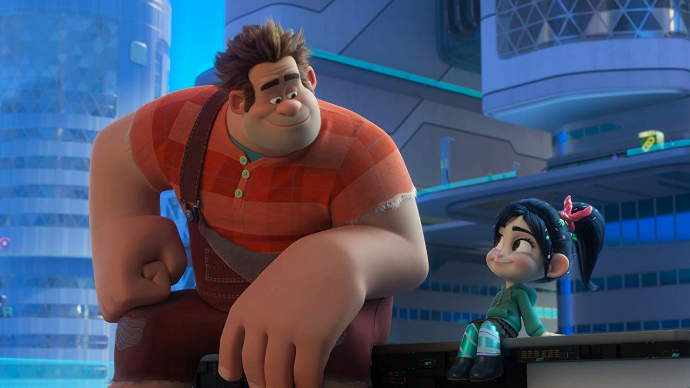

About Vanellope von Schweetz
As a formerly bullied outcast, Vanellope is a feisty and determined young girl who has turned her struggles into strength. Beneath her sharp wit and sarcastic exterior, she has a kind and loyal heart, especially toward her best friend Ralph, whom she sees as a fellow misfit. She is resourceful and quick-thinking, able to build karts from scraps and outsmart opponents with creative plans. Instead of letting her “glitch” define her as a flaw, Vanellope embraces it, transforming her imperfection into her greatest strength. Her journey is one of self-acceptance and belonging, proving that being different can be a superpower.
Ralph and Vanellope von Schweetz.